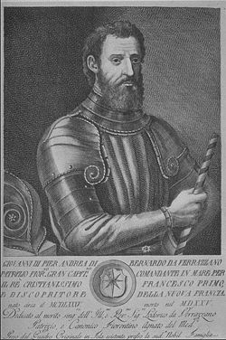
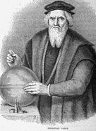
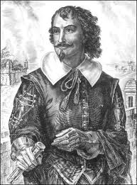

There continues to be speculation that Northern Europeans continued sailing around the North Atlantic rim throughout the medieval period. Fur, so necessary for cold climate clothing was scarcer and scarcer to find. Fishing grounds, especially for the cod that fed an expanding population was pushed farther and farther west into the Atlantic and the lure of great wealth provided ample motivation for daring adventurers.
Columbus’ “discovery “of a new world across the Atlantic set off a race throughout Europe to exploit the riches, subdue the native populations and settle the vast uncharted continent. The Portuguese, Corte Real in collaboration with the Danish crown explored the north east coast of North America during the turn of the century around 1500. The list has grown rapidly, Sebastian Cabot, a contemporary of Corte Real, Basque, Breton and Norman fisherman were scouring the North Atlantic banks for cod. By 1511 a “gentleman of the Azores” established a soap factory somewhere along the maritime coast in 1520. Then came Verrazano in 1524-27 with Jacques Cartier in1541, while fish stations were multiplying for process fish and whale oil in the 1530s. As the century wore on, the English and French competed to secure settlements and land grants throughout the future colonies.
Fourteen years before the Pilgrims landed at Plymouth Rock, followers of George Popham began construction of a permanent settlement on the Maine coast. By 1630 the slow trickle of adventurers had emerged into the British and French Colonies of North American and a new future.
THE SECOND ROUND OF DISCOVERY
Suzanne Carlson
The Old Viking routes were not exclusively for raiding and rapine. The anonymous author of the 13th century King’s Mirror, using the device of a father (the King) instructing his son on the ways of the business, presents a reliable text book on early medieval trade in northern realms. The power of the king and his agents increased with their control of that trade. An additional twist was added when the church demanded ever-greater payments. Church records, even in far away Greenland mostly consist of payment ledgers and inventories of church property (movable and fixed).
The Diplomatarium Norvegicum(available on the Internet) includes a rich array of customs records and bills of lading in addition to the endless church and royal decrees. In addition to exotic Greenland fare, American timber, fur and fish galore were finding their way to southern markets. The King grew rich, traders prospered, the church expanded and the great monastic houses sent brothers and sisters north to help build a new earthly order. Bishops were dispatched further and further west.
Beginning in the 12th century, Baltic merchants carried northern goods down the great rivers of Europe to an ever- growing market. Gradually German merchants established posts in nearly all northern ports and were knit into the Hanseatic League, a merchants' union centered in Hamburg and Lubeck. The hegemony created by the Germanic Hansa bit into the pockets of both church and crown, to say nothing of ordinary traders, leading to endless quarrels, embargoes and retaliations for real or perceived wrongs on both sides. Stockfish (cod) was often at the center of sea-born actions. The age of the “Cod wars” was long and bitter and particularly affected Iceland, and no doubt, reached toward Greenland. It is hard to imagine that the North Cannibals do most inhabit between Norumbega and Bariniah.
The Atlantic bridge linking the North Sea cod fisherman to The Shetlands, Faeroes, Iceland and Greenland did not extend to the fish-rich shallow banks to the southwest. (Now the Grand and Georges Banks)
Five years after Columbus crossed the Atlantic to find a more southerly route to the Orient, Genoese cum Venetian, Giovanni Caboto, Commissioned by the King of England under the English moniker of John Cabot set sail to find the gold at the end of the Northwest Passage. After three tries, no China and a cargo of fools' gold was his reward. His son Sebastian, attempted to follow in his father's wake and made at least one voyage to North America, looking for the hoped for Northwest Passage (1508), as well as another to repeat Magellan's voyage around the world. Instead heended up looking for silver along the Río de la Plata (1525-8).
Rumors, no doubt lingered and rippled across northern Europe. Yet, the Italian explorer, Giovanni da Verrazzano, in the service of the French crown, was also renowned as one of the first Europeans since the Norse expeditions to North America around AD 1000 to explore the Atlantic coast of North America. He ventured from the Carolinas to Newfoundland including New York harbor and Narragansett Bay in 1524.
 Giovanni Verrazano  John Cabot  Samuel de Champlain
In 1534, Jacques Cartier set sail under a commission from the king of France, hoping to discover a western passage to the wealth of Asia where he was to "discover certain islands and lands where it is said that a great quantity of gold and other precious things are to be found". And so after exploring parts of Newfoundland, the areas now the Canadian Atlantic provinces and the Gulf of St. Lawrence, his name was added to the "discovers of the New World".
The earliest written mention of the wealth of the world to the west was of the fabled city of Norumbega. During the frenzied age of exploration, when English interests were vying for their chunk of the New World, was recorded in an interview of David Ingram by Sir Francis Walsingham in 1582. Ingram was among crew members of the famous, or rather infamous pirate-Privateer John Hawkes set ashore in the Gulf of Mexico in 1568 and over a course of a year made his way north, perhaps as far as Saint John, New Brunswick, where he shipped back to England with Sir Humphrey Gilbert in 1569 to tell his tale. His garbled report states that "The people in those countries are professed enemies of the Cannibals or men eaters.
Next we hear of Simon Ferdinando, Considered by Hawkes of being a Spanish spy and a "treacherous villin", but became Walsingham's man, who was Elizabeth's secretary suggests that the highest interests of the court were behind Ferdinando, who was incidentally Portuguese, not Spanish, who in 1579 went in search of Norumbega. By 1580 John Walker who was Humphrey Gilbert's man, tells of a silver mine 12 leagues from the mouth of what is certainly the Penobscot River.
1971 Sauer, Carl Ortwin, Sixteenth Century North America. Unitversity of California Press, Berkley